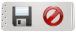

MIS Esquipulas Detalles Generales
Este apartado explica el menu "Opciones" y las barras que aparecen en todos los modulos del sistema
La barra contiene los siguientes iconos, los cuales son opcionales dependiendo del modulo en que se encuentren, pero que siempre realizan la misma operación:
-
(
 )
Nuevo
Permite la creacion de un nuevo documento
)
Nuevo
Permite la creacion de un nuevo documento
- () Edicion Permite guardar el documento o cancelar
-
(
 )
Navegar
Le permite imprimir, moverse entre registros, abrir la vista preliminar del reporte e ingresar un nuevo documento
)
Navegar
Le permite imprimir, moverse entre registros, abrir la vista preliminar del reporte e ingresar un nuevo documento
-
(
 )
Catalogo de Clientes
Este abre el catalogo de clientes
)
Catalogo de Clientes
Este abre el catalogo de clientes
- Especificos del modulo Facturas
 Este icono muestra los recibos correspondientes a la factura actual
Este icono muestra los recibos correspondientes a la factura actual
 Actualiza los datos necesarios para la factura, tales como: clientes, vendedor, bodega y lista de articulos
Actualiza los datos necesarios para la factura, tales como: clientes, vendedor, bodega y lista de articulos
En el menu de opciones, tenemos los siguientes botones:
- Iniciar sesión Ingresar al sistema con sus credenciales y permisos correspondientes
- Cambiar contraseña Permite cambiar la contraseña del usuario actual
- Ayuda Muestra el contenido de la ayuda segun el modulo correspondiente
- Acerca de Breves comentarios sobre la aplicación
- Cerrar sesión Bloquea la sesió actual para evitar que personas no autorizadas manipulen el sistema, cabe mencionar que la transaccion y documento abierto no se cierra, y al iniciar sesión nuevamente podra continuar.
Iniciar Sesión
Para iniciar sesión en MIS Esquipulas es necesario tener un nombre de usuario y una contrase√±a correctamente, este nombre de usuario debe estar activo.
Ademas de lo anterior tambien es necesario contar con una configuración correcta de base de datos, esto normalmente deberia de haber sido configurado al momento de la instalación por uno de los tecnicos del sistema pero a propositos de compleción aca detallaremos lo necesario para configurar una base de datos.
Configurar la base de datos
Servidor: dirección IP de la maquina en la que el servidor de bases de datos esta alojado
Base de datos: nombre de la base de datos a la que se conectara el sistema
Usuario: nombre del usuario mysql usado para la conexión
Contraseña: la contraseña del usuario mysql
Servidor de reportes: este parametro es opcional pero sin el no funcionaran los reportes del sistema, es la dirección
en la cual se encuentra alojado el sistema de reportes
 Iniciar sesión
Iniciar sesión
Cambiar Contraseña
Para cambiar su contraseña debe rellenar los datos que puede observar en la imagen, es muy importante tomar en cuenta el porcentaje de fortaleza de su contraseñ para evitar inclusiones no autorizadas al sistema.
 Cambiar Contraseña
Cambiar Contraseña